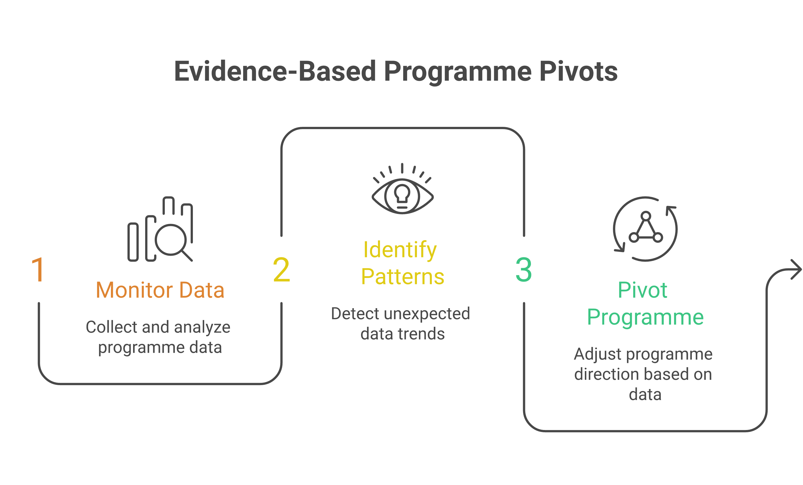
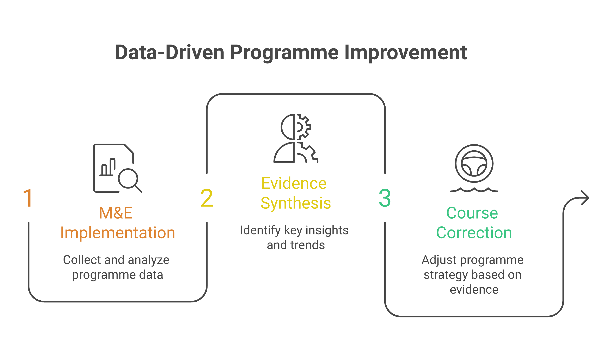

The Courage to Follow the Evidence
In development work, pivoting is hard. Organisations invest years building programmes, training staff, developing materials, and cultivating donor relationships around a particular theory of change. When monitoring data suggests the theory is wrong — or that a different approach would be more effective — the institutional pressure to ignore the evidence can be overwhelming. Yet the organisations that have the courage to follow the data, even when it is uncomfortable, often achieve the most transformative outcomes.
These three stories from South Asian development organisations illustrate what happens when M&E systems work as they should — not just tracking outputs for donor reports, but generating actionable insights that reshape programme strategy. Each story involves a moment of reckoning, when leaders confronted evidence that challenged their assumptions and chose to act on it rather than explain it away.

Story One: The Nutrition Programme That Wasn't Working
A mid-sized NGO in Jharkhand had been running a maternal nutrition programme for three years. The programme provided nutrition counselling to pregnant women through community health workers, supplemented by monthly ration distribution. Donor reports showed impressive numbers: 15,000 women counselled, 50,000 ration packets distributed, 200 health workers trained. By every output metric, the programme was succeeding.
Then the organisation invested in an outcome evaluation. The results were devastating. Anaemia rates among programme participants had not improved. Birth weight data showed no significant difference between programme villages and comparison villages. Three years of work, and the needle had not moved on the outcomes that actually mattered.
The programme team's first instinct was to question the data. Perhaps the comparison villages were wrong. Perhaps the evaluation timing was off. But the M&E director insisted on deeper analysis, disaggregating results by sub-groups and examining process data. The pattern that emerged was revealing: the ration packets were being shared across entire households rather than consumed by pregnant women alone. Nutrition counselling was delivered in group sessions where women felt unable to ask questions about sensitive topics like diet during pregnancy. And the health workers — overburdened with responsibilities for multiple government schemes — were spending an average of only four minutes per household on nutrition counselling.
The organisation pivoted dramatically. They replaced group counselling with home visits. They redesigned ration packets with individual serving sizes and clearer labelling. They reduced the health workers' caseloads and introduced mobile-based monitoring of visit duration and quality. Within 18 months, the redesigned programme showed measurable improvements in maternal haemoglobin levels. The data had been painful, but it pointed the way to a programme that actually worked.
"The most dangerous phrase in development is 'we've always done it this way.' Evidence-based pivots require dismantling that comfort and building something better." — A programme director reflecting on their organisation's pivot
Story Two: The Livelihood Programme That Found Its Real Impact
An organisation in rural Tamil Nadu had been running a livelihood programme focused on training women in tailoring and small enterprise development. The programme's theory of change was straightforward: skills training leads to income generation, which leads to economic empowerment. The M&E system tracked the expected indicators — number of women trained, businesses started, monthly income from enterprises.
The income data was disappointing. While trained women did earn more than before, the amounts were modest — averaging Rs 2,000-3,000 per month, barely enough to move families above the poverty line. The programme seemed to be producing incremental improvement rather than transformation. Some board members began questioning whether the investment was justified.
But a mixed-methods evaluation revealed something the income data missed entirely. Women in the programme were reporting dramatic changes in household decision-making power, mobility, and self-confidence. Their daughters were more likely to be in school. Domestic violence rates in programme households had decreased. Women were participating in gram sabha meetings for the first time. The programme's real impact was not economic — it was social. The tailoring workshops had become spaces where women gathered, shared experiences, built networks, and developed collective agency.
The pivot was subtle but significant. Rather than abandoning the livelihood model, the organisation reframed it. They added deliberate content on rights awareness, financial literacy, and collective action to the training curriculum. They created alumni networks that sustained peer support beyond the training period. And they redesigned their M&E framework to capture social empowerment outcomes alongside economic ones. The programme's impact narrative — and its fundraising strategy — was transformed by following the evidence to where it actually led.
Story Three: The Education Programme That Needed to Shrink
A large education NGO operating across three Indian states had built its reputation on scale — reaching 500,000 children across 5,000 schools with supplementary learning materials and teacher training. The organisation's dashboard showed steady growth in reach, and donors were impressed by the numbers.
A learning assessment conducted by an external evaluation team revealed a troubling pattern. Student learning outcomes were strongest in the 800 schools where the organisation had its most experienced facilitators and deepest community relationships. In the remaining 4,200 schools — where the programme had expanded rapidly over the preceding two years — outcomes were indistinguishable from non-programme schools. Scale had come at the cost of quality.
The leadership team faced a wrenching choice. Shrinking the programme meant reducing reach numbers, which meant difficult conversations with donors who had funded the expansion. But continuing to claim impact across 5,000 schools when the evidence showed impact in only 800 was dishonest. They chose integrity over optics.
The organisation consolidated to 1,500 schools — the original 800 plus 700 where facilitator quality was recoverable with additional investment. They developed a quality threshold framework that defined minimum conditions for programme effectiveness. Future expansion would happen only when quality benchmarks were met. Three years later, learning outcomes in 1,500 schools exceeded what the original 800 had achieved, and the organisation had developed a replicable quality assurance model that other education NGOs began adopting.

What These Stories Teach Us
These three pivots share common features. Each required an M&E system capable of generating uncomfortable truths. Each required leaders willing to act on evidence even when it contradicted institutional narratives. And each ultimately strengthened the organisation — not despite the pivot but because of it. The development sector needs more stories like these, and more organisations willing to tell them.